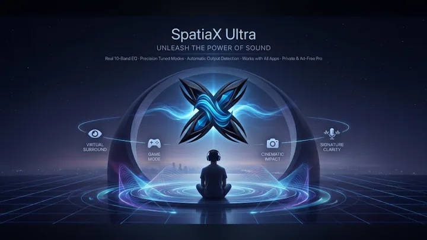
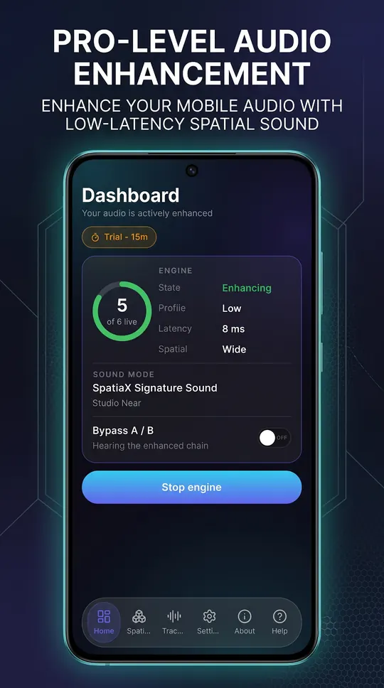
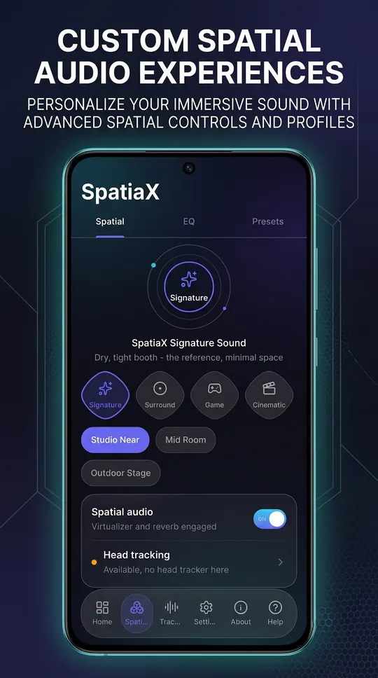
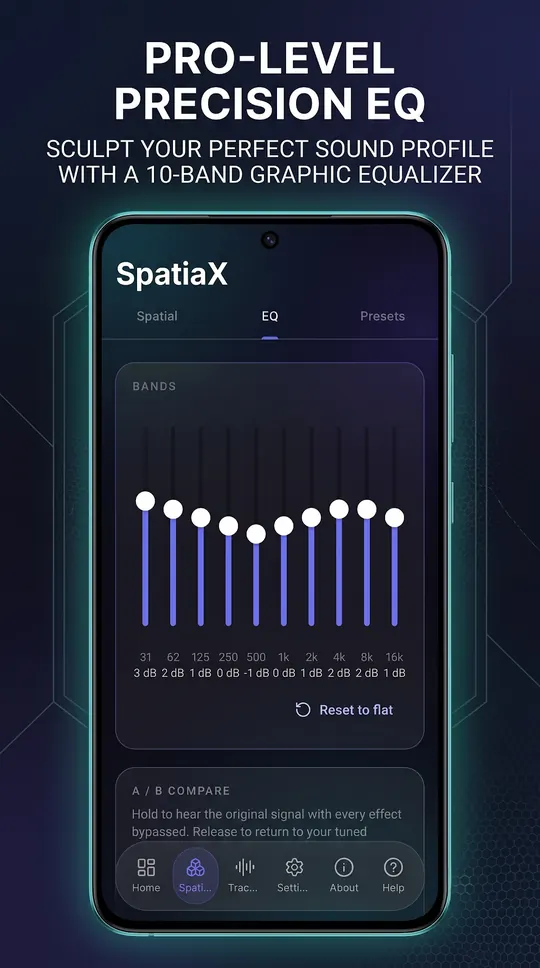
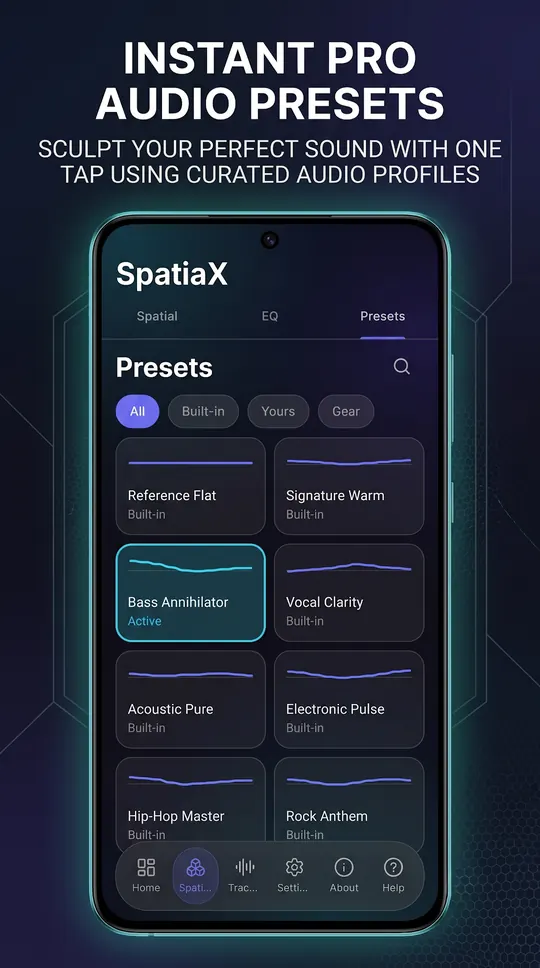
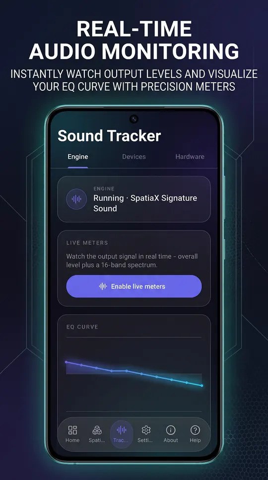
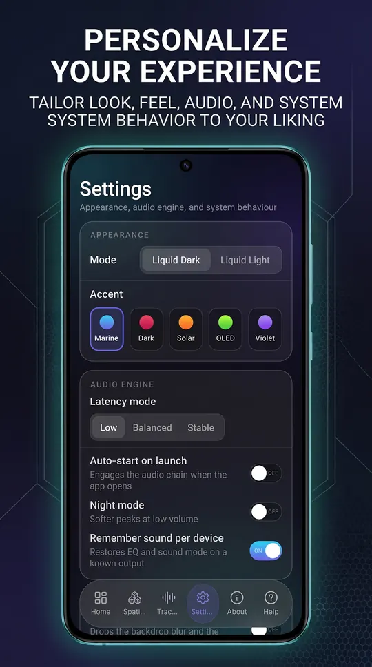

SpatiaX Ultra Mobile
System-wide spatial sound and a 10-band equaliser
SpatiaX Ultra lifts music, films, games and calls with spatial sound modes, a 10-band equaliser and a sound profile for every device, processed on your phone in real time. No account, no uploads.
Free on Google Play, with an optional one-time Pro unlock. There is no subscription and no account to keep it working. Genuine copies are published only on Google Play.
What SpatiaX Ultra Mobile does
- Hyper3D spatial modes: Hyper Wide, Hyper Front and Hyper Hall
- UltraBass modes: Deep Sub and Punch
- Crystal clarity modes: Vocal Focus and Air Lift
- 10-band equaliser with clip-safe limiting
- Earbuds, speaker and car each keep their own sound profile
- Night mode, live meters and hold-to-compare
SpatiaX Ultra Mobile on screen






SpatiaX Ultra Mobile running on Android, captured from the application itself.
Inside SpatiaX Ultra Mobile
A sound mode for the moment
Hyper3D opens the stage beyond your ears with Hyper Wide, Hyper Front and Hyper Hall. UltraBass adds sub-bass with Deep Sub and Punch. Crystal brings voices and detail forward with Vocal Focus and Air Lift. One tap starts the engine for the music, films, games and calls you play.
Tuned to your ears
A 10-band equaliser with clip-safe limiting, profiles tuned for popular headphones and earbuds, and a memory for every output: your earbuds, your speaker and your car each keep their own sound.
Hear the difference
Night mode softens loud peaks for late listening, live meters show the sound as it plays, and holding the compare button switches the enhancement off so you can hear exactly what it adds.
Who it is for
SpatiaX Ultra Mobile is built for music listeners, gamers, film watchers and commuters who care how their phone sounds.
It sits in the audio & video part of the catalogue, and your audio never leave the phone to be processed. There is no server behind SpatiaX Ultra Mobile to send them to.
Local-first, by design
Plenty of the alternatives send your audio to a server to be handled. SpatiaX Ultra Mobile does not. Processing runs on your phone’s own processor, and the sound your phone plays stay where you put them. No. The sound processing runs on your phone. A connection is used only for the ads in the free version and the Pro purchase check.
That is not a setting you enable, it is how SpatiaX Ultra Mobile is built, which is why there is no account to create and no subscription to lapse. Full detail is in the SpatiaX Ultra Mobile privacy policy.
Free and Pro
SpatiaX Ultra Mobile is free on Google Play. The full engine with ads, for 30 minutes a day, which rewarded ads can extend to 60 minutes.
A one-time Pro unlock, with no subscription, adds:
- No ads
- No daily time limit
- The equaliser and presets, permanently
Pro features can be tried free for a short time before you buy.
The free version shows ads served by Google AdMob. Google may use your device’s Advertising ID under its own policies. Hasnain Studio X does not receive or store it. Buying Pro removes all ads.
What it asks your phone for
Android shows these when you install or first use a feature. Each one is used for the reason given, and for nothing else.
- Audio settings
- to apply the enhancement to what your phone plays
- Foreground service and notification
- keeps the engine running while you listen, with a notification so you always know it is on
- Microphone
- for the live meters only, when you turn them on. Nothing is recorded or stored
- Advertising ID
- for the AdMob ads in the free version
Technical details
- Platform
- Android 9 or later
- Distribution
- Google Play
- Availability
- Available now
- Licence
- Free, optional one-time Pro
- Network required
- No, sound is processed on the phone
- Account required
- None
- Telemetry
- None. Free version shows ads
- Publisher
- Hasnain Studio X
- Developer
- Hasnain Butt Akhtar
Questions
Does SpatiaX Ultra Mobile need an internet connection?
No. The sound processing runs on your phone. A connection is used only for the ads in the free version and the Pro purchase check.
Does SpatiaX Ultra Mobile require an account?
No. There is no registration, no sign-in and no online identity. You install the app and use it.
What data does SpatiaX Ultra Mobile collect?
Hasnain Studio X collects nothing: there is no account, no analytics and no crash reporting that leaves your phone, and your audio are never uploaded. The free version shows ads served by Google AdMob. Google may use your device’s Advertising ID under its own policies. Hasnain Studio X does not receive or store it. Buying Pro removes all ads. The full detail is in the SpatiaX Ultra Mobile privacy policy.
Is SpatiaX Ultra Mobile a subscription?
No. SpatiaX Ultra Mobile is free on Google Play, with an optional one-time Pro unlock. There is no recurring fee.
Which versions of Android does it support?
Android 9 or later.
Get SpatiaX Ultra Mobile
Available now on Google Play. It is free, and a single optional purchase unlocks Pro for good, with no subscription and no account.
Also listed under spatial audio.
SpatiaX Ultra Mobile privacy policy · Support and bug reports · Audio & video apps · Full catalogue
SpatiaX Ultra Mobile™ and SpatiaX™ are trademarks of Hasnain Studio X. SpatiaX™ is a coined term originated by Hasnain Studio X. Hasnain Studio X™ is a trade mark of Hasnain Studio X.